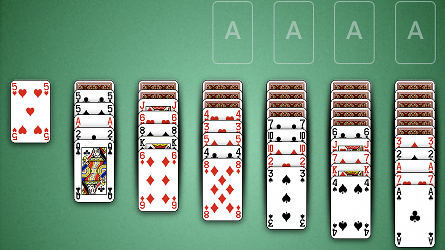
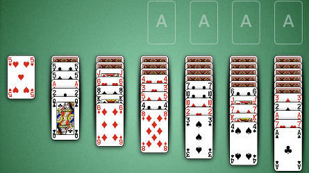

How to Play Yukon
Game Setup
Foundations: The foundations are the 4 areas in the top right hand corner of the table.
Initially the foundations are empty, but as the game progresses the foundaions will be built up by suit.
Tableau: The tableau are the 7 piles of cards stacked along the bottom of the table. The tableau begin with both face up and face down cards.

Tableau: The tableau are the 7 piles of cards stacked along the bottom of the table. The tableau begin with both face up and face down cards.

Rules
Yukon is played with a single deck of cards. The goal of the game is to place all 52 cards into the
foundations. The foundations are built up by suit, meaning that a foundation contains cards of the same suit
piled up from Ace on the bottom to King on top.
The tableau are used to organize columns of cards until it becomes possible to place them into the foundations. Every face up card is playable even if the cards on top of it are not ordered. The tableau are built down by face value, but you may not place a card on top of another card of the same suit.
If a face down card is on the top of a tableau, it can be flipped by clicking on it. Only a king can be placed into an empty tableau.
The tableau are used to organize columns of cards until it becomes possible to place them into the foundations. Every face up card is playable even if the cards on top of it are not ordered. The tableau are built down by face value, but you may not place a card on top of another card of the same suit.
If a face down card is on the top of a tableau, it can be flipped by clicking on it. Only a king can be placed into an empty tableau.
Scoring
Tableau to Foundations: 10 points
Turn over a Tableau Card: 5 points
Foundation to Tableau: -15 points
Turn over a Tableau Card: 5 points
Foundation to Tableau: -15 points